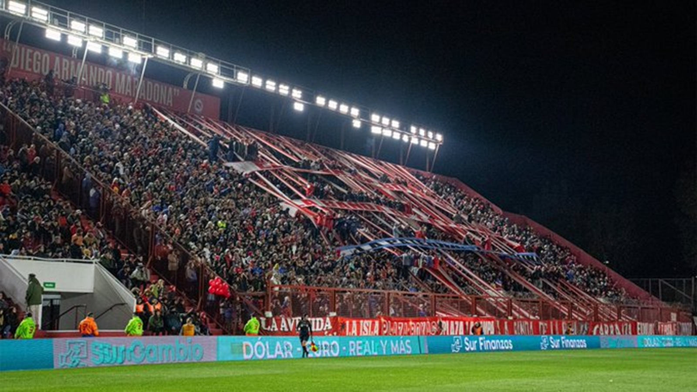

Ir a la cancha: más que fútbol, un ritual
Ir a la cancha no es solo ver un partido: es una cábala, una emoción compartida con mi tío, una parte de mi vida...
Leer más Me llamo Ignacio, soy hincha fanático de Argentinos Juniors desde chico. Este blog es un espacio para compartir lo que vivo con el club: partidos, viajes, anécdotas, fotos y más.
AAAJ es parte de mi historia, no solo un equipo.
Ir a la cancha no es solo ver un partido: es una cábala, una emoción compartida con mi tío, una parte de mi vida...
Leer másDesde el Ducó hasta Banfield: un repaso personal por los estadios que más me marcaron como hincha...
Leer más
Orgullo juvenil, identidad de juego, y una esperanza intacta. ¿Estamos cerca de una nueva estrella?
Leer más
Tenía apenas 6 años, pero el relato de mi tío y los videos me hicieron vivirlo como si estuviera ahí...
Leer más¿Qué es ser hincha? Para mí, es seguir al Bicho en cada partido, en cada grito de gol, en cada lágrima...
Leer más